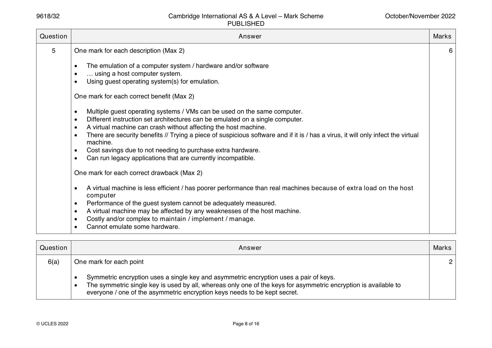
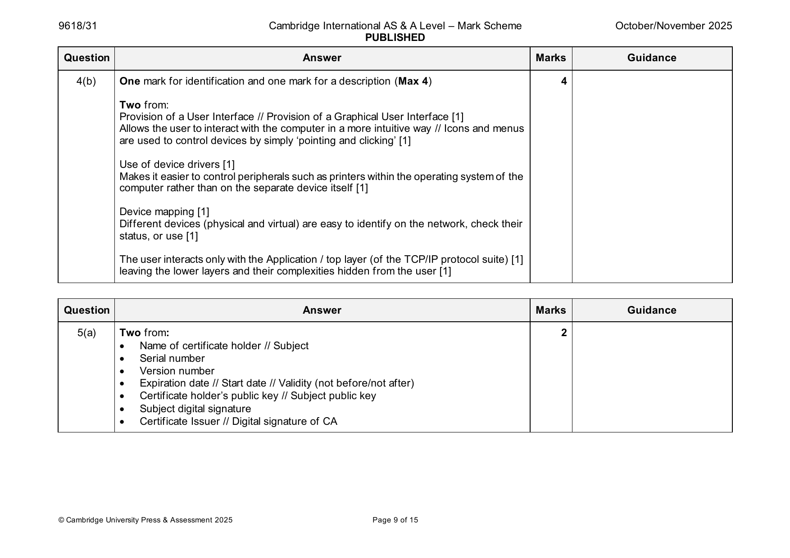
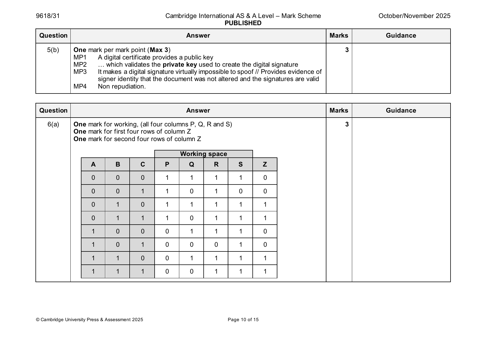

9618-2021-on-31-q08
Oct/Nov 2021 · Paper 31 · Question 8 · 6 marks
8(a) One mark for each correct marking point (Max 2) 2
• The SSL and TLS protocols provide communications security over the
internet / network
• … they provide encryption
• They enable two parties to identify and authenticate each other
• … and communicate with confidentiality and integrity.
8(b) One mark for each correct marking point (Max 4) 4
• An SSL/TLS connection is initiated by an application
• … which becomes the client
• The application which receives the connection becomes the server
• Every new session begins with a handshake (as defined by the
(SSL/TLS) protocols)
• The client requests the digital certificate from the server // the server
sends the digital certificate to the client
• The client verifies the server’s digital certificate
• …and obtains the server’s public key
• The encryption algorithms are agreed
• The symmetric
• … session keys are generated / defined
Question Answer Marks
Official mark scheme pages: 8 · source PDF URL
9618-2021-on-32-q08
Oct/Nov 2021 · Paper 32 · Question 8 · 6 marks
8(a) One mark for each correct marking point (Max 2) 2
• The SSL and TLS protocols provide communications security over the
internet / network
• … they provide encryption
• They enable two parties to identify and authenticate each other
• … and communicate with confidentiality and integrity.
8(b) One mark for each correct marking point (Max 4) 4
• An SSL/TLS connection is initiated by an application
• … which becomes the client
• The application which receives the connection becomes the server
• Every new session begins with a handshake (as defined by the
(SSL/TLS) protocols)
• The client requests the digital certificate from the server // the server
sends the digital certificate to the client
• The client verifies the server’s digital certificate
• …and obtains the server’s public key
• The encryption algorithms are agreed
• The symmetric
• … session keys are generated / defined
Question Answer Marks
Official mark scheme pages: 8 · source PDF URL
9618-2022-mj-31-q08
May/June 2022 · Paper 31 · Question 8 · 8 marks
8(a)(i) Any two from 2
To ensure the message is authentic // came from a trusted source
To ensure that only the intended receiver is able to understand the message
To ensure the message has not been altered during transmission
Non-repudiation, neither the sender or receiver can deny the transmission occurred
8(a)(ii) Symmetric 2
Asymmetric
8(b)(i) Any two from 2
Any eavesdropping can be identified (as the state will be changed)
Integrity of the key once transferred can be guaranteed (cannot be copied and decrypted at a later date)
Longer/more secure keys can be exchanged
8(b)(ii) Any two from 2
Limited range
requires dedicated fibre (optic) line and specialist hardware
cost of dedicated fibre (optic) line and specialist hardware is expensive
polarisation of light may be altered whilst travelling down fibre optic cables
© UCLES 2022 Page 10 of 11
Official mark scheme pages: 10 · source PDF URL
9618-2022-mj-32-q07
May/June 2022 · Paper 32 · Question 7 · 10 marks

7(a) Any three from 3
MP1 enquiry made to Certificate Authority (CA)
MP2 enquirer’s details checked by CA
MP3 if enquirer details verified by CA then public key is agreed
MP4 CA creates/issues certificate that includes the enquirers public key
MP5 encrypting data sent to/by CA with the CA’s public/private key
7(b)(i) MP1 The message is hashed with (the agreed hashing algorithm)… 3
MP2 … to produce a message digest
MP3 The message digest is then encrypted with the sender’s private key to form the digital signature
7(b)(ii) Any four from 4
MP1 The message together with the digital signature is decrypted using the receiver’s private key
MP2 The digital signature received is decrypted with the sender’s public key to recover the message digest sent
MP3 The decrypted message received is hashed with the agreed hashing algorithm to reproduce the message digest
of the message received
MP4 The two message digests are compared
MP5 … if they are the same the message has not been altered // if they are different the message has been altered
Question Answer Marks
Official mark scheme pages: 8 · source PDF URL
9618-2022-mj-33-q08
May/June 2022 · Paper 33 · Question 8 · 8 marks
8(a)(i) Any two from 2
To ensure the message is authentic // came from a trusted source
To ensure that only the intended receiver is able to understand the message
To ensure the message has not been altered during transmission
Non-repudiation, neither the sender or receiver can deny the transmission occurred
8(a)(ii) Symmetric 2
Asymmetric
8(b)(i) Any two from 2
Any eavesdropping can be identified (as the state will be changed)
Integrity of the key once transferred can be guaranteed (cannot be copied and decrypted at a later date)
Longer/more secure keys can be exchanged
8(b)(ii) Any two from 2
Limited range
requires dedicated fibre (optic) line and specialist hardware
cost of dedicated fibre (optic) line and specialist hardware is expensive
polarisation of light may be altered whilst travelling down fibre optic cables
© UCLES 2022 Page 10 of 11
Official mark scheme pages: 10 · source PDF URL
9618-2022-on-31-q06
Oct/Nov 2022 · Paper 31 · Question 6 · 8 marks
6(a) One mark for each correct point (Max 2) 2
• A private key is the unpublished/secret key/never transmitted anywhere.
• It has a matching public key
• It is used to decrypt data that was encrypted with its matching public key.
6(b) One mark for each correct point (Max 2) 2
• The message to be sent is encrypted using the recipient’s public key. // The message to be sent is encrypted using
the sender’s private key.
• The message is decrypted using the recipient’s private key. // The message is decrypted using the sender’s public
key.
6(c) One mark for each correct point (Max 4) 4
• The message together with the digital signature is decrypted using the receiver’s private key
• The digital signature received is decrypted with the sender’s public key to recover the message digest sent
• The decrypted message received is hashed with the agreed hashing algorithm to reproduce the message digest of the
message received
• The two message digests are compared
• … if both digests are the same the message has not been altered // if they are different the message has been
altered.
© UCLES 2022 Page 8 of 15
Official mark scheme pages: 8 · source PDF URL
9618-2022-on-32-q06
Oct/Nov 2022 · Paper 32 · Question 6 · 6 marks


6(a) One mark for each point 2
• Symmetric encryption uses a single key and asymmetric encryption uses a pair of keys.
• The symmetric single key is used by all, whereas only one of the keys for asymmetric encryption is available to
everyone / one of the asymmetric encryption keys needs to be kept secret.
© UCLES 2022 Page 8 of 16
6(b) One mark for each point (Max 4) 4
• The organisation requests a certificate from a Certificate Authority (CA)
• The organisation may send their public key to CA
• The organisation gathers all the information required by the CA in order to obtain their certificate, which includes
information to prove their identity
• The CA verifies the organisation’s identity
• The CA generates / issues the certificate including the organisation’s public key (and other information).
Question Answer Marks
Official mark scheme pages: 8, 9 · source PDF URL
9618-2022-on-33-q06
Oct/Nov 2022 · Paper 33 · Question 6 · 8 marks
6(a) One mark for each correct point (Max 2) 2
• A private key is the unpublished/secret key/never transmitted anywhere.
• It has a matching public key
• It is used to decrypt data that was encrypted with its matching public key.
6(b) One mark for each correct point (Max 2) 2
• The message to be sent is encrypted using the recipient’s public key. // The message to be sent is encrypted using
the sender’s private key.
• The message is decrypted using the recipient’s private key. // The message is decrypted using the sender’s public
key.
6(c) One mark for each correct point (Max 4) 4
• The message together with the digital signature is decrypted using the receiver’s private key
• The digital signature received is decrypted with the sender’s public key to recover the message digest sent
• The decrypted message received is hashed with the agreed hashing algorithm to reproduce the message digest of the
message received
• The two message digests are compared
• … if both digests are the same the message has not been altered // if they are different the message has been
altered.
© UCLES 2022 Page 8 of 15
Official mark scheme pages: 8 · source PDF URL
9618-2023-mj-31-q09
May/June 2023 · Paper 31 · Question 9 · 6 marks
9(a) One mark per mark point (Max 2) 2
MP1 To provide better security
MP2 … by using two different keys / a public key and a private key
MP3 One of the keys is used to encrypt the message
MP4 … the matching key is used to decrypt the message.
9(b) One mark per benefit (Max 2) 4
MP1 Provides security based on laws of physics rather than mathematical
algorithms, so more secure.
MP2 To protect the security of data transmitted over fibre optic cables.
MP3 Virtually unhackable.
MP4 The performance of quantum cryptography is continuously improved,
making it suitable for most valuable government/industrial secrets.
MP5 Longer keys can be used
MP6 Eavesdropping can be detected
One mark per drawback (Max 2)
MP1 Lacks many vital features such as digital signature, certified mail, etc.
MP2 High cost of purchasing / maintaining equipment required.
MP3 Currently only works over relatively short distances.
MP4 Error rates are relatively high as technology is still being developed.
MP5 Polarisation of light can change during transmission.
MP6 Allows criminals and terrorists to hide their communications.
© UCLES 2023 Page 7 of 10
Official mark scheme pages: 7 · source PDF URL
9618-2023-mj-32-q05
May/June 2023 · Paper 32 · Question 5 · 5 marks

5(a) One mark per mark point (Max 2) 2
MP1 to produce a virtually unbreakable encryption system / send
virtually un-hackable secure messages …
MP2 …using the laws / principles of quantum mechanics / properties of
photons
MP3 detects eavesdropping …
MP4 …because the properties of photons change
MP5 to protect security of data transmitted over fibre optic cables
MP6 to enable the use of longer keys.
5(b) One mark per mark point (Max 3) 3
MP1 Symmetric cryptography uses a single key to encrypt and decrypt
messages, Asymmetric cryptography uses two.
MP2 The symmetric key is shared, whereas with asymmetric, only the
public key is shared (and the private key isn’t).
MP3 … the risk of compromise is higher with symmetric encryption and
asymmetric encryption is more secure.
MP4 Symmetric cryptography is a simple process that can be carried out
quickly, but asymmetric is much more complex, so slower.
MP5 The length of the keys in symmetric encryption are (usually) shorter
than those for asymmetric (128/256 bits v 2048 bits).
© UCLES 2023 Page 6 of 12
Official mark scheme pages: 6 · source PDF URL
9618-2023-mj-33-q09
May/June 2023 · Paper 33 · Question 9 · 6 marks
9(a) One mark per mark point (Max 2) 2
MP1 To provide better security
MP2 … by using two different keys / a public key and a private key
MP3 One of the keys is used to encrypt the message
MP4 … the matching key is used to decrypt the message.
9(b) One mark per benefit (Max 2) 4
MP1 Provides security based on laws of physics rather than mathematical
algorithms, so more secure.
MP2 To protect the security of data transmitted over fibre optic cables.
MP3 Virtually unhackable.
MP4 The performance of quantum cryptography is continuously improved,
making it suitable for most valuable government/industrial secrets.
MP5 Longer keys can be used
MP6 Eavesdropping can be detected
One mark per drawback (Max 2)
MP1 Lacks many vital features such as digital signature, certified mail, etc.
MP2 High cost of purchasing / maintaining equipment required.
MP3 Currently only works over relatively short distances.
MP4 Error rates are relatively high as technology is still being developed.
MP5 Polarisation of light can change during transmission.
MP6 Allows criminals and terrorists to hide their communications.
© UCLES 2023 Page 7 of 10
Official mark scheme pages: 7 · source PDF URL
9618-2024-mj-31-q07
May/June 2024 · Paper 31 · Question 7 · 5 marks
7(a) One mark per point (max 3) 3
MP1 A digital certificate is an electronic/online document.
MP2 used to authenticate/prove the identity of a website/the online identity of an individual/organisation
MP3 typically issued by a CA
MP4 For example: it contains information identifying a website owner/individual and a public key
7(b) One mark per point (max 2) 2
MP1 The digital certificate provides the public key
MP2 … that can be used to validate the private key associated with the organisation/website/digital signature
© Cambridge University Press & Assessment 2024 Page 10 of 14
Official mark scheme pages: 10 · source PDF URL
9618-2024-mj-32-q04
May/June 2024 · Paper 32 · Question 4 · 4 marks
4 One mark per mark point (Max 4) 4
MP1 Sheila’s computer uses an algorithm to generate a matching pair of keys private and public
MP2 Sheila’s computer sends Fred’s computer Sheila’s public key // Fred‘s computer acquires Sheila’s public key
MP3 Fred’s computer encrypts the document/plain text using Sheila’s public key to create cipher text
MP4 Fred’s computer sends the cipher text to Sheila’s computer The cipher text can only be decrypted using Sheila’s
private key // Sheila’s computer uses Sheila’s private key to decrypt the cipher text.
Question Answer Marks
Official mark scheme pages: 5 · source PDF URL
9618-2024-mj-33-q07
May/June 2024 · Paper 33 · Question 7 · 5 marks
7(a) One mark per point (max 3) 3
MP1 A digital certificate is an electronic/online document.
MP2 used to authenticate/prove the identity of a website/the online identity of an individual/organisation
MP3 typically issued by a CA
MP4 For example: it contains information identifying a website owner/individual and a public key
7(b) One mark per point (max 2) 2
MP1 The digital certificate provides the public key
MP2 … that can be used to validate the private key associated with the organisation/website/digital signature
© Cambridge University Press & Assessment 2024 Page 10 of 14
Official mark scheme pages: 10 · source PDF URL
9618-2025-mj-31-q09
May/June 2025 · Paper 31 · Question 9 · 4 marks
9(a) One mark for each mark point (Max 2) 2
MP1 Ensure security/privacy when using the internet
MP2 Data encryption
MP3 Identification / authentication of client and server
9(b) One mark for each mark point (Max 2) 2
MP1 When transmitting authentication data e.g. passwords, session cookies
MP2 When transmitting data that must be protected from modification on its way to or from a server e.g. user input, or
results from the server
MP3 When transmitting data classified as non-public.
Question Answer Marks
Official mark scheme pages: 13 · source PDF URL
9618-2025-mj-32-q10
May/June 2025 · Paper 32 · Question 10 · 4 marks
10 One mark for identifying a protocol and one mark for stating its purpose 4
MP1 Handshake protocol
MP2 To establish a secure and reliable connection between two devices,
systems or networks // Permits the web server and client to authenticate each
other to make use of encryption algorithms
MP3 Record protocol
MP4 Provides a secure and reliable way to send and receive data over a
network // To exchange records between the client and server // Responsible
for securing application data end ensuring its integrity and authenticity during
transmission // Encrypts and authenticates data exchanged between a client
and a server // Deals with the format for data transmission.
Question Answer Marks
Official mark scheme pages: 10 · source PDF URL
9618-2025-mj-33-q07
May/June 2025 · Paper 33 · Question 7 · 4 marks
7 One mark for each correct marking point (Max 4) 4
MP1 An SSL/TLS connection is initiated by an application/client.
MP2 Every new session begins with a handshake as defined by the SSL/TLS protocols.
MP3 The client requests the digital certificate from the server // The server sends the digital certificate to the client.
MP4 The client verifies the server’s digital certificate
MP5 … and obtains the server’s public key.
MP6 The encryption algorithms are agreed. // The symmetric session keys are generated/defined.
MP7 A secure session is established between client and server.
Question Answer Marks
Official mark scheme pages: 11 · source PDF URL
9618-2025-on-31-q05
Oct/Nov 2025 · Paper 31 · Question 5 · 5 marks


5(a) Two from: 2
• Name of certificate holder // Subject
• Serial number
• Version number
• Expiration date // Start date // Validity (not before/not after)
• Certificate holder’s public key // Subject public key
• Subject digital signature
• Certificate Issuer // Digital signature of CA
© Cambridge University Press & Assessment 2025 Page 9 of 15
5(b) One mark per mark point (Max 3) 3
MP1 A digital certificate provides a public key
MP2 … which validates the private key used to create the digital signature
MP3 It makes a digital signature virtually impossible to spoof // Provides evidence of
signer identity that the document was not altered and the signatures are valid
MP4 Non repudiation.
Question Answer Marks Guidance
Official mark scheme pages: 9, 10 · source PDF URL
9618-2025-on-32-q07
Oct/Nov 2025 · Paper 32 · Question 7 · 5 marks
7(a) One from 1
Symmetric (cryptography / encryption)
Quantum (cryptography)
7(b) One mark per mark point (Max 4) 4
MP1 The two keys held by the organisation are a private key and a public key
MP2 The organisation makes the public key available to anyone who wishes to send them secure transmissions // The
sender obtains the organisation’s public key
MP3 The sender uses the organisation’s public key to encrypt the message / plain text // The sender uses the
organisation’s public key to turn the message into cipher text
MP4 The organisation uses its private key to decrypt the message.
Question Answer Marks
Official mark scheme pages: 13 · source PDF URL
9618-2025-on-33-q09
Oct/Nov 2025 · Paper 33 · Question 9 · 4 marks
9 One mark per mark point (Max 4) 4
MP1 the company generates a public and private key pair locally using a
web browser and an RSA key generator tool, which may be part of
the CA’s web page
MP2 the company requests a digital certificate from a Certificate
Authority (CA)
MP3 the CA responds with its public key and digital certificate,
MP4 … signed with its private key
MP5 the company gathers authentication information e.g. its public key
MP6 … and sends it to the CA signed with the company’s private key and
encrypted with the CA’s public key
MP7 the CA verifies the received information and generates/issues the
digital certificate.
© Cambridge University Press & Assessment 2025 Page 12 of 16
Official mark scheme pages: 12 · source PDF URL